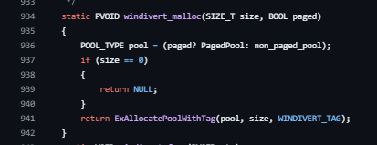

| Ник | Пост | Дата |
|---|---|---|
| junkofuruto(FUMOBOMBER) | Разрабатываю свои утилиты для обхода блокировок и заметил, что последний коммит в WinDivert был два года назад. Беспокоит то, что библиотека долго не поддеживается (возможно я что-то упускаю). | 2024-11-25T05:41:44.337Z |
| manwithbox(manwithbox) | Что-то упускаешь. Библа самодостаточна, серьезных багов не выявлено, поэтому не обновляется. | 2024-11-25T08:53:55.731Z |
| bolvan | Главная проблема - подпись драйвера | 2024-11-25T10:25:04.681Z |
| Xunlei | Да, надо платить по 300$ в год за EV Code Signing Certificate. | 2024-11-25T12:58:41.612Z |
| bolvan | если бы еще только платить. И дрова надо сдавать все на проверку в МС | 2024-11-25T13:42:24.636Z |
| bunkerfox(bunkerfox) | Ага, каждая вторая игра из-за него вылетает | 2024-11-25T21:55:20.699Z |
| junkofuruto(FUMOBOMBER) | Просто если посмотреть что к чему в коде у драйвера, то там много каких вызовов уже устарели в 10 винде (поддержка десятки закончится уже в октябре 2025, поэтому в 11+ уже без шансов)  | 2024-11-26T07:51:28.133Z |
| manwithbox(manwithbox) |
Ну так можно пофиксить и пересобрать. В чем проблема? Или маппингом Вторым даже проще, я обычно предпочитаю второй подход, так как нередко для новой функции нужно переписывать всё заново. И, кстати, deprecated не означает removed. Устаревшие функции в большинстве своем продолжают работать. Поддержка win10 заканчивается в 2032 году. Это поддержка win10 22H2 в 2025 навернется. | 2024-11-26T08:53:24.413Z |
| manwithbox(manwithbox) | Игра вылетает не из-за драйвера, а из-за кончености систем защиты, которые ненавидят любой буфер между приложением и стэком. | 2024-11-26T08:59:02.201Z |
| dartraiden(Alexander Gavrilov) | В Windows до сих пор есть исключение: при проверке подписи драйверов она доверяет сертификатам, выпущенным до 2015 года и имеющим кросс-подпись от Microsoft. Соответственно, делается подпись таким сертификатом (их можно отыскать в утечках из различных компаний, у меня на руках 6 таких сертификатов и о существовании ещё нескольких известно), а поверх делается отметка времени (указывающая на дату, когда сертификат был валиден) вашим собственным сервером таймштампов и корневой сертификат сервера таймштампов загоняется в доверенные корневые, чтобы Windows доверяла метке времени. Антивирусы на это реагируют нервно, т.к. эти утёкшие сертификаты использовались и в грязных целях. Античиты онлайн-игр могут тоже брыкаться. Но это единственный способ получить работающий драйвер без отправки в Microsoft. Если кто-то будет заниматься разработкой драйвера, я подпишу. | 2024-11-28T20:06:47.119Z |
| dartraiden(Alexander Gavrilov) |
Не нужно, см. например, драйвер DiskCryptor, на нём только подпись Microsoft. Подписи разработчика нет. | 2024-11-28T20:18:16.084Z |
| Chatlanin | на unknowncheats люди переодически выкидывают сертификаты которые античиты уже внесли в свои базы, для других целей они пойдут | 2024-11-28T20:59:50.514Z |
| D4NICKY(D4NICKY) | Вылетает колда варзон, можно конечно обойти это переименованием файла и правлением WinDivert.dll но довольно небезопасно | 2024-11-29T13:20:17.005Z |
| Ori | Тут уже был случай когда человек переименовал и его в валоранте забанили. Так что это точно плохая идея. | 2024-11-29T13:44:12.179Z |
| dartraiden(Alexander Gavrilov) | Если местные эксперты по написанию драйверов (чей флуд я только что вычистил) вместо чесания языками пришлют автору пулл-реквесты, доводящие драйвер до идела, от этого будет хоть какая-то польза. Ответ на вопрос топикстартера дан: известных альтернатив нет, если появятся - свистите, переоткрою тему. | 2024-11-29T18:19:02.021Z |
| dartraiden(Alexander Gavrilov) | 2024-11-29T18:25:04.836Z |
{kind=link}